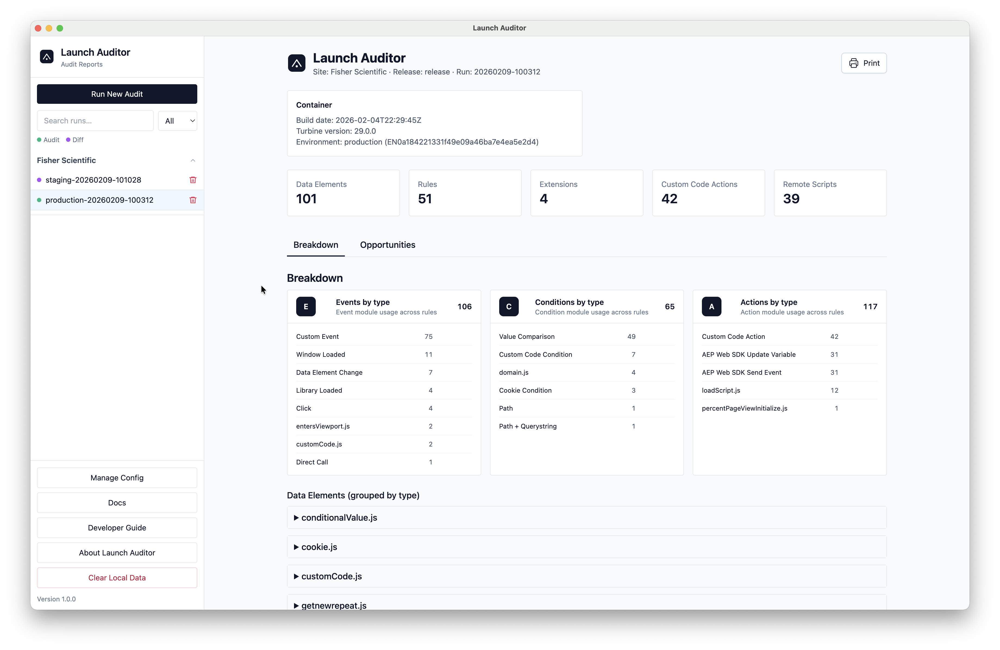
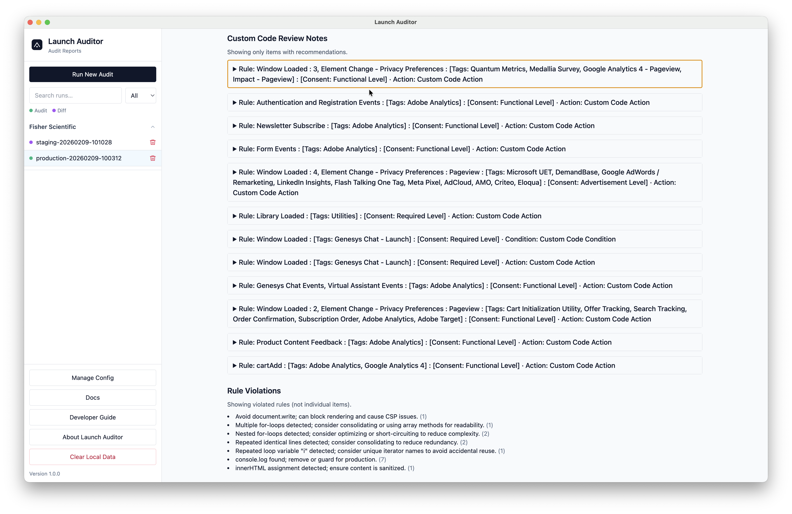
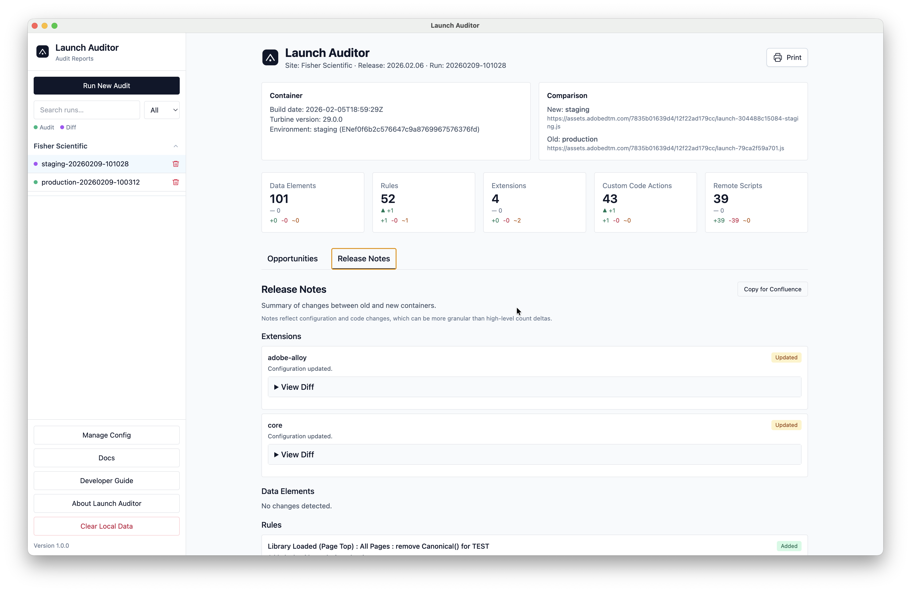

Launch Auditor scans Adobe Data Collection containers and generates a readable report covering configuration, opportunities, and release notes. Know what’s deployed, what’s missing, and what to fix — fast.

Review Adobe Data Collection setups with a single run. Launch Auditor surfaces configuration insights, highlights gaps, and gives teams a standardized audit report.
Summarize extensions, rules, data elements, and libraries in a clean audit view.
Spot common gaps in governance, data quality, and operational consistency.
Track release notes, changes, and policy checks before publishing updates.
Export or share a standardized report with stakeholders and audit teams.
From selecting a container to producing an audit report, Launch Auditor keeps the workflow tight.
Load the Adobe Data Collection container you want to review.
Launch Auditor evaluates rules, data elements, extensions, and libraries.
Use the report tabs to see breakdowns, opportunities, and release notes.
Add screenshots below to match the latest Launch Auditor UI.


Grab the latest desktop builds for macOS and Windows directly from GitHub Releases.
DMG installer for macOS on Apple Silicon (arm64).
Installer for Windows 10/11.
Explore the rest of the Launch Suite for adjacent workflows.